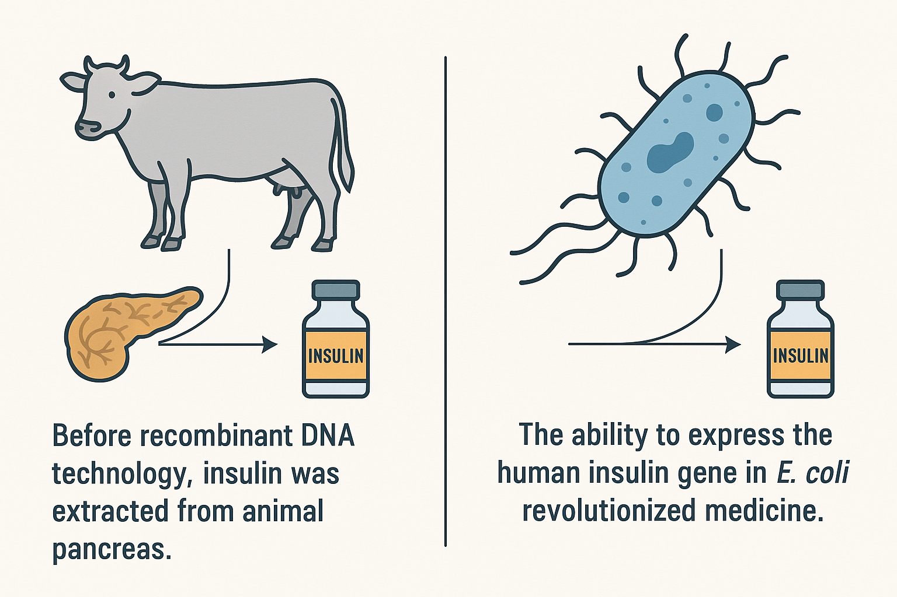
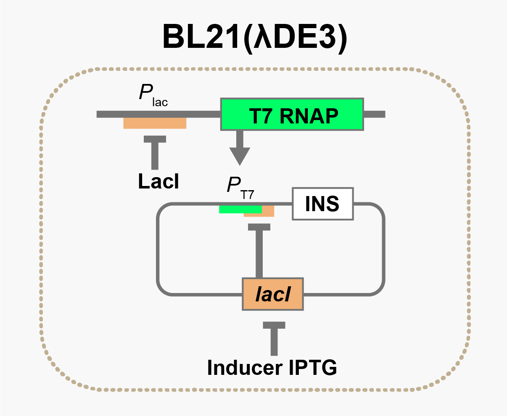
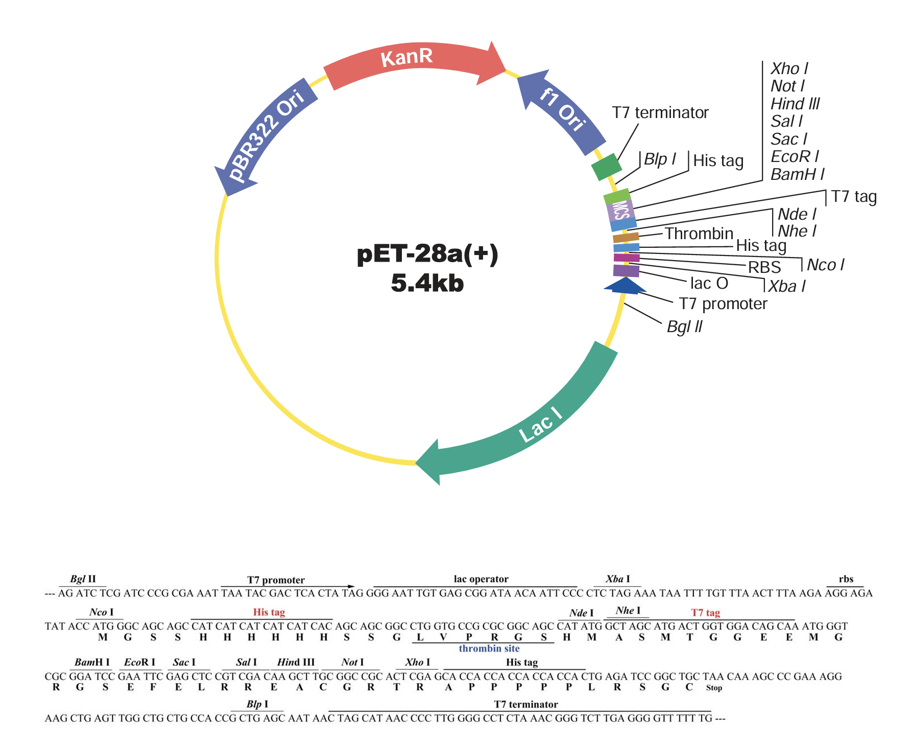
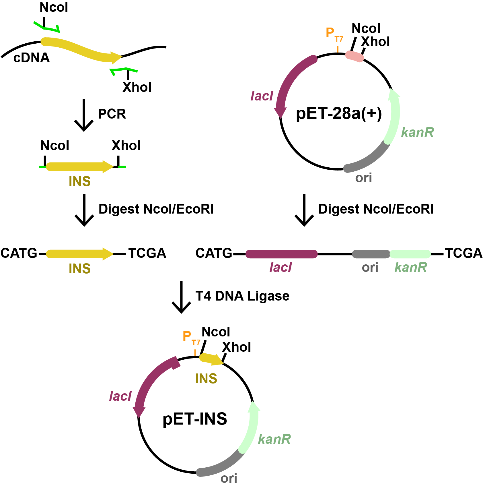

Basic Cloning: Overexpression of Human Insulin¶
Overview¶
In this tutorial, you'll learn to design oligonucleotides and plan a traditional restriction/ligation cloning experiment. We'll walk through cloning the human insulin cDNA into a pET expression vector for high-level expression in E. coli. This process mimics a landmark achievement in biotechnology: the recombinant production of human insulin, which today powers a multi-billion-dollar global industry.
Insulin was the first therapeutic protein produced using recombinant DNA technology, replacing animal-derived sources and transforming diabetes care. In this example, you’ll see how tools like PCR, restriction enzymes, and plasmid vectors can be used to enable scalable, microbial production of life-saving medicines.
Context: Recombinant Insulin Production¶

Figure: Before 1982, insulin was extracted from thousands of pig or cow pancreases, yielding limited supply and often triggering immune reactions. Recombinant DNA technology enabled the production of human insulin in E. coli, launching a biotechnology revolution. Today, recombinant insulin is a multi-billion-dollar industry and one of the earliest and most successful applications of genetic engineering.
In this exercise, we’ll simulate how to clone the human insulin CDS from cDNA, which is DNA that has been synthesized in vitro by reacting mRNA (purified from human cells) with reverse transcriptase. We'll insert it into a pET expression plasmid to produce insulin recombinantly.
The T7 System¶

Figure: T7 system architecture in BL21(λDE3). IPTG induction lifts LacI repression, allowing expression of both T7 RNA Polymerase (genomically encoded) and the insulin (INS) gene on a pET plasmid under the control of the T7 promoter.
The T7 expression system is a two-level inducible design used for powerful, tightly regulated expression of recombinant proteins in E. coli BL21(λDE3).
Here's how it works:
- The BL21(λDE3) genome contains a copy of the T7 RNA polymerase (T7 RNAP) gene under control of the lac promoter (Plac).
- The pET expression plasmid carries your gene of interest (e.g., INS) downstream of a T7 promoter (PT7), as well as a lacI gene that represses both promoters via LacO operator sites.
Role of IPTG:¶
In the absence of IPTG: - The LacI repressor binds to LacO sites, preventing transcription from both Plac and PT7. - This keeps both T7 RNAP and the target gene (INS) silent.
Upon IPTG addition: - IPTG binds to LacI, causing it to dissociate from the DNA. - T7 RNAP is transcribed and translated. - T7 RNAP then binds to PT7 on the plasmid and drives high-level expression of the insulin gene.
This modular setup ensures tight control (low background, high on-demand expression), which is ideal for producing proteins that may be toxic or burden the host.
Step 1: Choose a Template¶
We'll use a GenBank record for human insulin cDNA:
- 📄 Insulin cDNA: Download GenBank
- 🔗 NCBI: BC005255.1
Step 2: Choose a Vector¶
We'll use a pET vector with:
- T7 promoter
- LacI repression system
-
Multiple cloning site (MCS)
-
📄 Starter pET plasmid: Download GenBank

Figure: pET-28a(+) vector map showing the T7 promoter and the multiple cloning site (MCS). In this tutorial, we’ll insert the insulin CDS between the NcoI and XhoI restriction sites for expression under the T7 promoter. Image adapted from GenScript.
Step 3: Design PCR Primers¶
🔬 What is an Annealing Region?¶
In cloning, we use the term annealing region to describe the stretch of DNA where a single-stranded oligo or DNA fragment will base-pair with a complementary strand. This occurs in PCR (primers annealing to a template), in Gibson Assembly (fragment overlaps annealing), or in SOEing (stitching adjacent fragments). It’s where the DNA goes from single- to double-stranded as part of the molecular mechanism.
Design Guidelines:¶
- Length: 18–25 bp is typical.
- GC content: Aim for 40–60% GC.
- 3′ end (for PCR): Preferably ends in G or C to improve binding and extension.
- Avoid: Strong secondary structure, long runs of a single base, or repeats.
- Tm: Ideally between 55–65°C and matched between primer pairs.
PCR is generally forgiving, especially for standard cloning. You usually don’t have to optimize extensively. Most often, the start or end of your primer is anchored to a specific feature (e.g. the start codon), leaving just one floating end to select an 18–25 bp window.
This means you may only have a handful of valid choices—just pick 20 bp and move on. It’s usually enough.
You'll see this concept—annealing regions—appear throughout the tutorial series. These basic rules apply regardless of the cloning method.
Visualizing the Cloning Workflow¶
Before we look at the construction file, let's walk through what's actually happening in this cloning strategy.
The diagram below illustrates how we use PCR, restriction digestion, and ligation to move the insulin coding sequence (INS) into the pET-28a(+) expression plasmid.
 Figure: Cartoon schematic of the pET-INS construction. Each component in the image matches a step in the construction file you'll write next: PCR of the insulin gene, digestion with NcoI/XhoI, and ligation into the pET-28a(+) vector.
Design primers with:
- A short 5′ tail (5 random bases)
- A restriction site (NcoI at start, XhoI at end)
- 18–22 bp annealing region from insulin cDNA
Primer Structure Example:
Forward primer (ins-F):
[5' tail] - CCATGG - [18–22 nt from start of insulin ORF]
Reverse primer (ins-R):
[5' tail] - CTCGAG - [reverse complement of final 18–22 nt of insulin ORF]
- CCATGG = NcoI site (includes ATG start codon)
- CTCGAG = XhoI site (downstream of stop codon)
Step 4: Construction File¶
Here's a complete construction file representing this cloning plan:
PCR ins-F ins-R insulin_cDNA pcr_ins
Digest pcr_ins NcoI,XhoI 1 pcr_dig
Digest pET28a NcoI,XhoI 1 vec_dig
Ligate pcr_dig vec_dig pET-INS
oligo ins-F ccataCCATGGccctgtggatgcgcctcctg
oligo ins-R cagatCTCGAGctagttgcagtagttctccag
Step 5: Simulate the Product¶
Use your sequence editor or simulation tools (as demonstrated in the earlier video) to predict the outcome of each step in your construction file. For each stage—PCR, digestion, and ligation—verify the resulting sequence.
Pay special attention to the final ligated product: - Confirm the insert is placed between the NcoI and XhoI sites. - Ensure the reading frame is preserved. - Check that the final sequence starts with ATG and ends appropriately.
Once verified, save the final predicted sequence for downstream use or visualization.
Step 6: Visualize the Final Product¶
- 📄 Final pET-insulin plasmid: Download GenBank
Product Visualization:
Step 7: Validate¶
- ORF is left-to-right and starts with ATG
- ORF is in-frame with tags (if any)
- No internal NdeI or XhoI sites in insert
- Final construct includes all expected features
🎯 Try it yourself¶
In your quiz, you'll clone a randomly selected gene from the genome of Bacillus atrophaeus UCMB-5137.
This gene is a coding DNA sequence (CDS), which means it directly encodes a protein. It's an open reading frame (ORF): a continuous stretch of codons that starts with a start codon (like ATG) and ends with a stop codon (TAA, TAG, or TGA).
We're giving you only the CDS — not the full gene. That means no promoter, no ribosome binding site (RBS), no terminator, and no replication origin — just the exact stretch of DNA used to encode the protein. You need to include this entire sequence in your designs.
Cloning Quiz
Design primers to amplify the selected gene and clone it into pET-28a using NcoI and XhoI.
Construction File:
Once you’ve successfully completed the quiz, take a moment to experiment. It won't affect the assignment score. Try removing a 5′ tail, changing an oligo name, or deleting a restriction site. Note what changes break things, and how your changes modify the construction file.